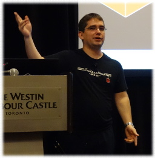
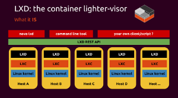
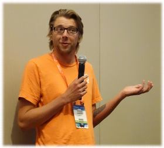

On the way to safe containers
Stéphane Graber and Tycho Andersen gave a presentation at the Linux Security Summit in Toronto to introduce the LXD container hypervisor. They also outlined some of the security concerns and other problems they have encountered while developing it. Graber is the LXD maintainer and project lead at Canonical, while Andersen works on the team, mostly on checkpoint/restore for containers.

LXD is a container-management tool that uses LXC containers, Graber said. It is designed to be simple to use, but comprehensive in what it covers. LXD is a root-privileged daemon, which gives it additional capabilities compared to the command-line-oriented LXC. It has a REST API that allows it to be easily scriptable, as well.
LXD is also considered "safe", though Graber did use air quotes when he said that. It uses every available kernel security feature "that we can get our hands on" for that, though user namespaces is one the primary features it depends on. LXD also scales from a single container on a developer's laptop to a corporate data center with many hosts and containers to an OpenStack installation with thousand of compute nodes.
From his slides [PDF], he showed a diagram of how all the pieces fit together (seen below at right). Multiple hosts, all running Linux (and all running the same kernel version for those interested in container migration, he cautioned), with the LXD daemon (using the LXC library) atop the kernel. The LXD REST API can then be used from the LXD command-line tool, the nova-lxd OpenStack plugin, from scripts, or even using curl, he said.
So, that is what LXD is, Graber said, but there is a list of things that it is not as well. It is not a virtualization technology itself; it uses existing virtualization technologies to implement "system containers"—those running a full Linux distribution, rather than simply an application. It is not a fork of LXC; instead it uses the LXC API to manage its containers. It is also not another application container manager; it will work with Docker, rkt, and other application container systems.

As part of its security measures, LXD uses all of the different namespace types. Graber said that a lot of work had gone into the control groups (cgroups) namespace over the last year, since LXD/LXC needed support for the cgroups version 1 (v1) API, which was not part of the original cgroup namespace work. For Linux Security Modules (LSMs), LXC supports both AppArmor and SELinux, though LXD only supports AppArmor at this point.
As far as capabilities go, LXD does drop a few, but must keep most of them available to the container since the application(s) that will be running in the system container are unknown. Those capabilities that the container will not need (e.g. CAP_MAC_ADMIN to override mandatory access control or CAP_SYS_MODULE to allow loading and unloading kernel modules) are dropped.
LXD also uses cgroups extensively and much of the talk will be about "why they're great and why they're really bad and hopefully what we can do to try and make them better", Graber said. He has spent some time over the last year trying to work out user-friendly ways to express kernel resource limits. For example, LXD uses the CPU cgroup controller to handle CPU limits for the containers, which can be expressed as a number of cores or as a limit based on CPU time. Those time limits can be configured as a percentage of the CPU or in terms of a time budget (e.g. 10ms out of every 150ms).
Similarly, memory limits can be set using a percentage or a fixed amount. LXD does not expose the kernel memory limits, since "no one knows how to set those correctly". Swapping can be enabled on a per-container basis. Disk quotas can be used if the underlying filesystem supports them in the right way for LXD; for now, that means Btrfs and ZFS. Network traffic can also be limited on a per-container basis. Containers can get an overall priority that will be applied to scheduling and other decisions based on the relative priorities of all of the containers on the system.
There are shared kernel resources that can cause problems when multiple containers are running, not necessarily because of malicious activity, but simply by accident. For example, inotify handles (used to track filesystem changes) are limited to 512 per user, which in practice means 512 shared between all of the containers. That is not enough when you are running systemd, which uses a lot of inotify handles and fails when it cannot get one rather than falling back to polling. There is no good reason to have this global limit, however, so tying the number of inotify handles to the user namespace is probably the right way to fix that.
Another problem area is the shared network tables. For example, Graber runs a "capture the flag" competition annually that uses 15,000 or so containers to simulate the internet. That creates a routing table with 3.3 million entries, which is too large for the kernel limits. The way the network tables are shared in the system means that a container user could fill up these tables so that other containers or the host can no longer open sockets. There is a similar problem with pseudoterminal slave (PTS) devices, he said.
Ulimits pose a related problem. Unless each container has its own range of user and group IDs (UIDs and GIDs), which would need to include 64K IDs per container to be "vaguely POSIX-compliant", ulimits will apply across container boundaries. Tying them to some kind of namespace would be better, but it is not entirely clear which namespace would make sense, he said.
The main isolation used for LXD containers is a user namespace. In addition, an AppArmor profile is installed to prevent cross-container access to files and other resources, though it is largely just a safety net. Some system calls are blacklisted using seccomp, as well.
Container checkpoint/restore

At that point, Andersen took over the presentation to discuss checkpoint/restore for containers. He began with some oddities that he has come across—for sysctl handling, in particular. For example, sysctls for network namespaces change the value for the namespace that opened the /proc/sys file, while the IPC and UTS namespaces change the value for whichever namespace does the write() of the value. But the only user that can open() the IPC/UTS sysctl files is real root, which would imply that file descriptors for those files would be passed to unprivileged containers, but that won't work.
He then moved on to some other checkpoint/restore problem areas. In reality, checkpoint/restore is almost the antithesis of security, Andersen said. It requires looking inside the state of a process, which needs privileges, but there are some things that even root cannot do. Checkpoint/restore uses ptrace() to scrape a process's state, but there are security technologies that block some of that access.
For example, seccomp will kill a process if a blocked system call is made, so seccomp might need to be suspended while the checkpoint is being done. Similarly, LSMs can prevent some actions that a checkpoint or restore might need to do, so LSM access control might need to be paused during those operations. Andersen did note that when discussing this idea with Kees Cook it was not entirely well-received—in fact, Cook said the feature "gave him the creeps". Beyond those problems, there is also a need to handle the checkpoint of nested namespaces, he said.
Graber then gave a demo of LXD that included migrating running containers from one host to another. As with most demos, it was a bit hard to describe; those interested can check out the YouTube video of the talk. It did serve to show some of the capabilities of LXD, its command-line interface, and the ease of setting, running, and managing containers using it. LXD is implemented in Go, while LXC is written in C.
As a recap, Graber summed up the LXD project and its wider implications. Unprivileged containers are safe by design, he said. LSMs can be used to provide a safety net to help ensure the security of those containers. It is still too easy to make a denial-of-service attack against the kernel, however, using PTSes, network tables, and other shared resources. Unprivileged APIs are regularly requested by container users, some of which are reasonable, though many others are not. Finally, checkpoint/restore for containers is working in some configurations, but there are lots of things still to be worked out.
[I would like to thank the Linux Foundation for travel support to attend
the Linux Security Summit in Toronto.]
| Index entries for this article | |
|---|---|
| Security | Containers |
| Conference | Linux Security Summit/2016 |
Posted Sep 22, 2016 11:06 UTC (Thu)
by spender (guest, #23067)
[Link]
Based on this presentation though, it seems like there's nothing special here compared to other container solutions -- the kernel (and the security of user namespaces) is still the weakest link, LXD simply allows that same weakness to be spread out over multiple physical machines more easily. A safe container it is not.
-Brad
Posted Sep 22, 2016 18:34 UTC (Thu)
by simosx (guest, #24338)
[Link]
Posted Sep 22, 2016 18:48 UTC (Thu)
by bvanheu (guest, #88814)
[Link]
For anybody wondering, the CTF competition that simulates the Internet for its 350+ participants is a non-profit event named NorthSec (https://www.nsec.io), based in Montreal, Canada.
The code is freely available here: https://github.com/nsec/the-internet
On the way to safe containers
"We’re working with silicon companies to ensure hardware‐assisted security and isolation for these containers, just like virtual machines today."
LXD makes it easy to set up multiple host containers (compared to the app containers in Docker).
This can also be done by hand and the learning curve is not steep at all.
Here is an example with multiple websites, https://simos.info/blog/how-to-set-up-multiple-secure-ssltls-qualys-ssl-labs-a-websites-using-lxd-containers/
On the way to safe containers
On the way to safe containers